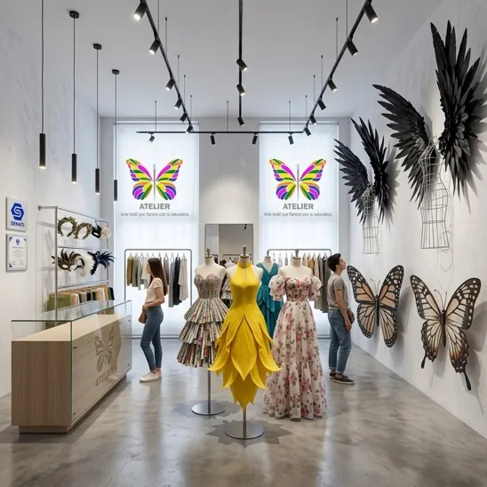
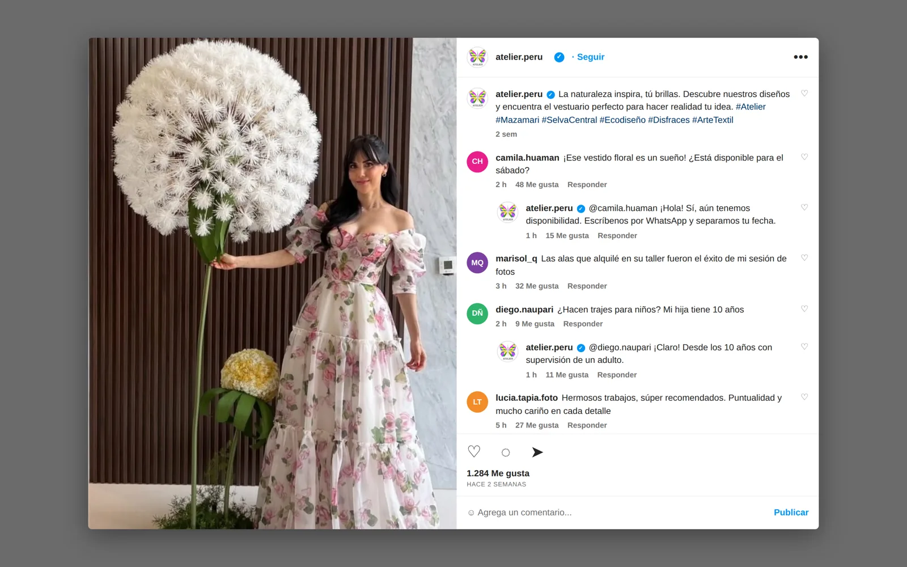
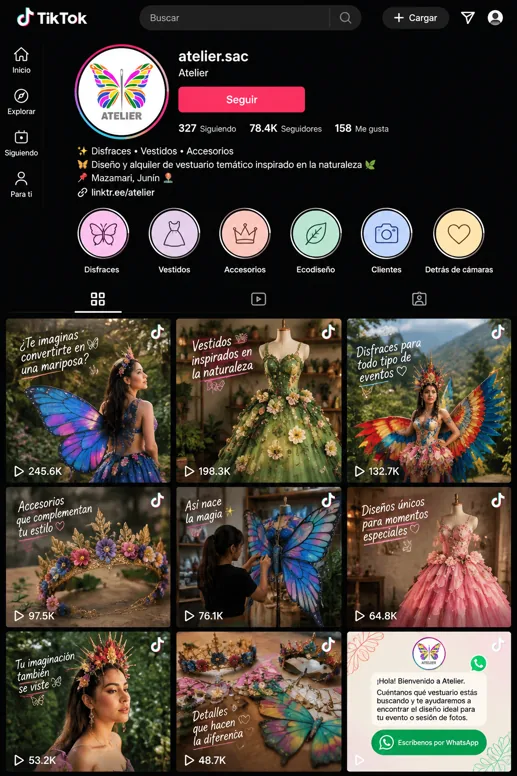
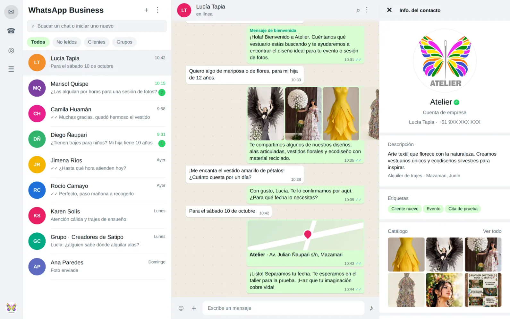
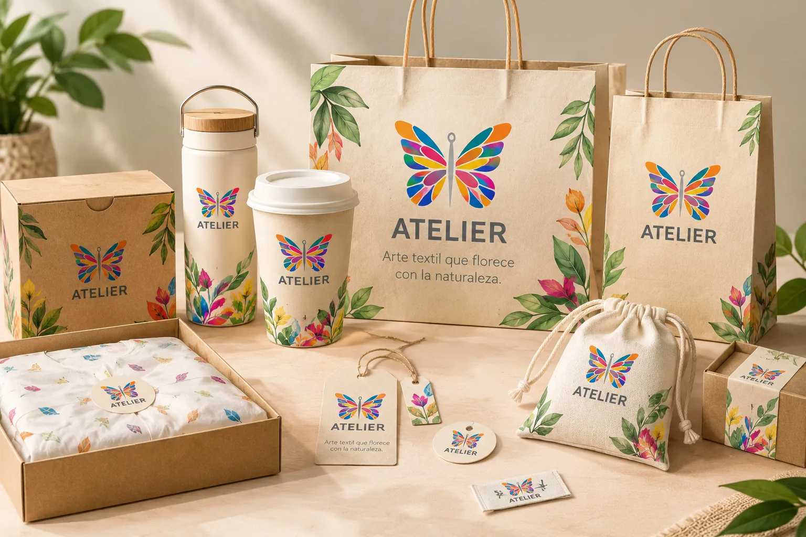
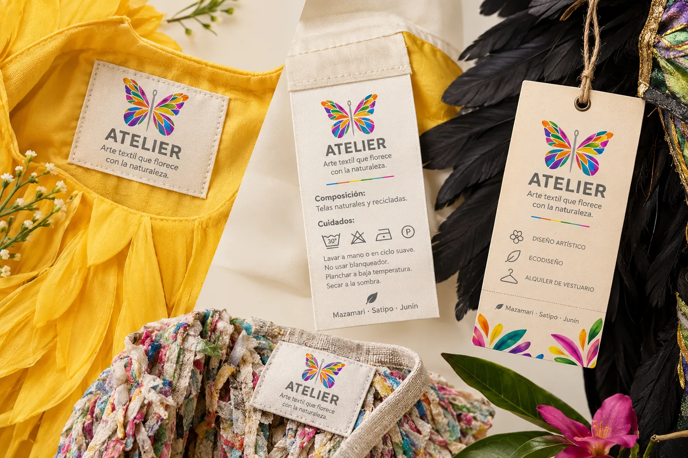
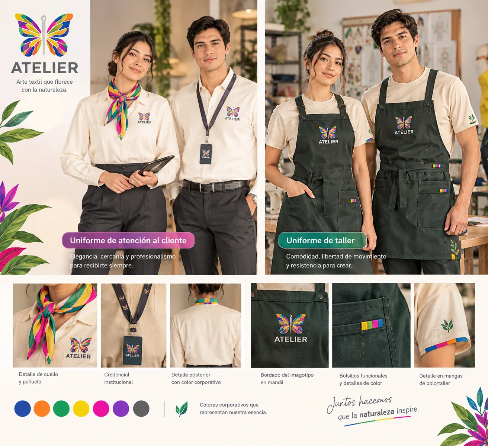

Lo que distingue a Atelier
- Concepto propio de confección y diseño textil artesanal.
- Identidad centrada en aguja, hilo y mariposa.
- Valoración de los acabados y la exclusividad.
Evaluación de la identidad visual, la percepción del público, las aplicaciones de marca y la comunicación de Atelier en Mazamari.
Explorar la auditoría ↓La auditoría permite conocer cómo percibe el público la marca Atelier, sus diseños textiles, los vestuarios de fantasía y la calidad de los acabados artesanales. También ayuda a reconocer fortalezas y aspectos por mejorar para comunicar con claridad la artesanía, la elegancia, el diseño exclusivo y la conexión con la naturaleza.
Objetivo general: evaluar la imagen corporativa y la presencia digital de Atelier para fortalecer su identidad visual, mejorar la percepción del cliente y consolidar su posicionamiento como estudio de diseño textil.
Objetivos específicos: analizar el imagotipo, la paleta cromática y la tipografía; conocer la valoración de los clientes sobre la confección y la atención; revisar la coherencia del sitio web y las redes sociales; identificar fortalezas, debilidades, oportunidades y amenazas; y proponer mejoras para el manual de identidad y la comunicación corporativa.


La auditoría observa los elementos internos y externos que influyen en la percepción de la marca. Se organiza en cinco acciones:



El documento presenta una encuesta cuali-cuantitativa aplicada a una muestra de 5 personas vinculadas al vestuario de alta costura, la fantasía y el diseño artesanal. Las respuestas destacan el reconocimiento del símbolo y el valor artesanal, y señalan oportunidades para mejorar la uniformidad gráfica y los empaques.
| Perfil | Aspecto consultado | Respuesta resumida | Lectura de imagen |
|---|---|---|---|
| María R. · 28 años | Símbolos del logotipo | Recuerda la mariposa formada con hilo y aguja; la percibe delicada y refinada. | Reconocimiento positivo de la simbología. |
| Sofía M. · 34 años | Valores transmitidos | Asocia la marca con elegancia, naturaleza y trabajo hecho a mano. | Coherencia con el eslogan y el concepto artesanal. |
| Camila T. · 22 años | Web y publicaciones | Valora las fotos, pero nota falta de uniformidad en los fondos de las publicaciones. | Conviene ordenar la retícula y las plantillas gráficas. |
| Lucía G. · 41 años | Representatividad del eslogan | Considera que las prendas artesanales parecen una obra de arte viva. | El concepto conecta con las creaciones. |
| Elena V. · 30 años | Mejoras sugeridas | Propone empaques más unificados y una guía clara para el cuidado de las prendas. | Oportunidad para estandarizar aplicaciones físicas. |



El autoanálisis compara la identidad que Atelier desea proyectar con su presentación real. La matriz FODA resume los principales factores descritos en el documento.



La auditoría identifica una propuesta diferenciada, vinculada con el diseño textil artesanal y la naturaleza. Para consolidar su posicionamiento, se plantean tres acciones prioritarias:



Arte textil que florece con la naturaleza.
Volver al inicio ↑